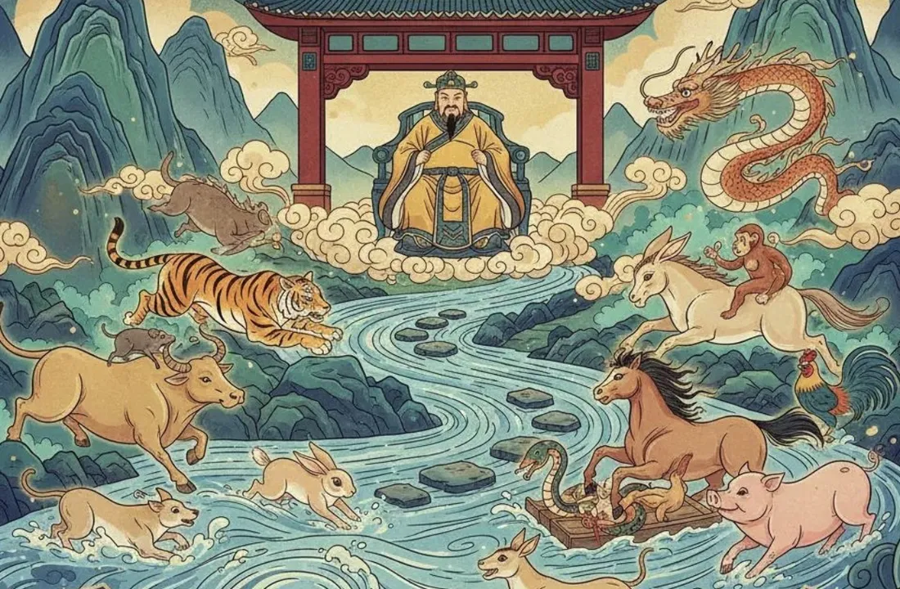

Zodiac Stories & Legends
The Great Zodiac Race: How the 12 Animals Earned Their Places
Why does the Rat come first and the Pig last? Ask almost anyone who grew up with the Chinese zodiac, and they will tell you about a race across a river.

The story everyone knows
The Great Race is the best-known story about the Chinese zodiac. It explains why the twelve animals appear in a fixed order, and it gives each one a small piece of character: the clever Rat, the hard-working Ox, the generous Dragon. It is a folk tale, told and retold for generations, so no two tellings are exactly the same. What follows is the version most people know.
The Jade Emperor's challenge
In most versions, the Jade Emperor, ruler of heaven in Chinese folk religion, wanted a way to measure time. He announced that the years of the calendar would be named after animals, in the order in which they reached him. Between the animals and the finish lay a wide, fast river.
Some animals were strong swimmers. Others could not swim at all. The race was not only about speed: it rewarded planning, teamwork and, in a few cases, a little trickery.
How each animal finished
The Rat and the Cat were poor swimmers, so they asked the kind-hearted Ox to carry them across. Near the far bank, the Rat pushed the Cat into the water, leapt off the Ox's head and reached the Emperor first. The Ox, who had done all the swimming, came second.
- Tiger (3rd): strong but slowed by the current, which kept pushing it downstream.
- Rabbit (4th): hopped from stone to stone, then clung to a floating log, as told in The Rabbit's Clever Crossing.
- Dragon (5th): could fly, yet arrived fifth because it stopped to bring rain to a village and blew the Rabbit's log to the shore. Read more in The Dragon's Legend.
- Snake (6th) and Horse (7th): the Snake hid on the Horse's hoof and jumped out at the finish, startling the Horse. See The Snake's Place in the Great Race.
- Goat (8th), Monkey (9th) and Rooster (10th): the Rooster found a raft, and the Monkey and Goat cleared weeds so it could pass. The Emperor rewarded their teamwork.
- Dog (11th): a good swimmer that stopped to play and bathe in the river.
- Pig (12th): stopped to eat, fell asleep and arrived last.
Why there is no Cat
The Cat, pushed into the river by the Rat, arrived too late and was left out of the zodiac. Storytellers say this is why cats dislike water and why cats chase rats to this day. In another well-known telling, the Rat promises to wake the Cat on the morning of the race, then lets it sleep. Either way, the tale gives a playful reason for an old rivalry. The full Rat story is in Why the Rat Came First.
Other versions of the tale
Because the story was passed on by word of mouth, the details change from teller to teller. In some versions the Rat promises to sing for the Ox during the crossing, then jumps off at the end. In a Buddhist version there is no race at all: the Buddha invites all the animals to visit him before he leaves the world, only twelve come, and he names a year after each in the order of their arrival.
None of these versions is the "correct" one. Each keeps the same order of animals while giving different reasons for it.
Folk tale and history: what we actually know
The Great Race is a story, not a record of how the zodiac began. Historians trace the twelve animals to the twelve Earthly Branches, an ancient counting system used for years, months, days and the twelve two-hour periods of the day. Each branch came to be paired with an animal.
Bamboo slips from a tomb at Shuihudi, sealed in 217 BCE, already record a cycle of animals, though a few differ from today's list (a deer appears where the Horse is now). The Han-dynasty scholar Wang Chong's Lunheng, from the first century CE, is the earliest surviving text that names the same twelve animals we use today. For more on the system itself, see Why Are There 12 Animals?
The same twelve animals in Cambodia
Cambodia uses the same twelve animals, from Choot (Rat) to Kor (Pig), although the Khmer animal year changes at Khmer New Year in April rather than at Lunar New Year. Our guide to the Khmer animal years explains the difference.
What the story teaches
Read as a fable, the race is about character. The Rat wins with wits, the Ox earns respect through effort, the Dragon loses time but gains honor by helping others, and the Pig reminds us that comfort has a cost. Many people enjoy finding their own animal in the line-up and asking whether its place in the race fits them.
Curious about your own animal's place in the race? Find your zodiac animal with our free checker, then read its full guide.
Frequently asked questions
Is the Great Race a true story?
No. It is a folk tale that explains the order of the twelve animals. Historians link the animals to the ancient Earthly Branches counting system.
Who won the Great Race?
In the folk tale, the Rat finished first by riding on the Ox's back and jumping off at the finish.
Why is there no Cat in the Chinese zodiac?
In the tale, the Rat pushed the Cat into the river, so it arrived too late. It is a story, not a historical reason.
Who organised the race?
Most versions say the Jade Emperor. A Buddhist version says the Buddha invited the animals, and only twelve came.
Sources and further reading
- Wikipedia: Chinese zodiac — the Great Race folk tale and its variants, and the link between the animals and the Earthly Branches.
- StudyCLI: Chinese Zodiac Explained — notes that the Shuihudi slips (tomb sealed in 217 BCE) record an animal cycle with a deer where the Horse is now.
- Macao Communications Museum: Chinese Zodiac in Postage Stamps — names Wang Chong's Lunheng as the earliest surviving text with today's twelve signs.
- Wikipedia: Earthly Branches — the twelve branches, their two-hour periods and the theory linking them to Jupiter, the Year Star.
- The Royal Mint: The Story of the Animals Behind the Chinese Zodiac: the Rat and the Cat — a retelling of the Rat and Cat tale.
The Great Race and the other tales here are folk tales, told in many versions; they are not historical events. Personality traits are traditional zodiac beliefs, shared for culture and entertainment.
Explore more: Why the Rat Came First · Why Are There 12 Animals? · Year of the Rat guide · Khmer animal years · All Zodiac Stories & Legends
← Back to Zodiac Stories & Legends